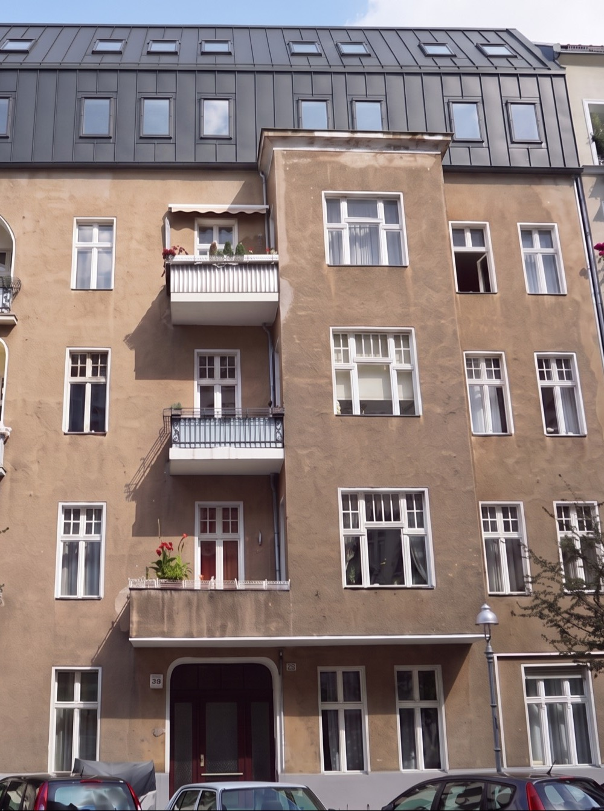

Bauen im Bestand
Dachgeschossausbau Friedbergstraße · Berlin.
Tragwerksplanung für den Ausbau eines Gründerzeit-Dachgeschosses zu Wohnraum.
Projektdaten
- Projektart
- Bauen im Bestand
- Standort
- Berlin-Friedrichshain
- Bestand
- Gründerzeit-Mehrfamilienhaus, Baujahr um 1910
- Konstruktion
- Vollholz / Holz-Stahl-Hybrid / Vollstahl — in Untersuchung
- Leistung
- Komplette Tragwerksplanung
- Status
- In Planung
- Leistungsbereich
- Bauen im Bestand
Die Aufgabe
Ein Gründerzeit-Mehrfamilienhaus, Baujahr um 1910. Das Dachgeschoss soll Wohnraum werden. Die Frage an die Tragwerksplanung: Welche Dachkonstruktion trägt der Bestand — und welche trägt sich wirtschaftlich?
1910
Baujahr Bestand
Die Lösung
Wir haben drei Tragwerksvarianten für die neue Dachkonstruktion untersucht und jede nach Lastabtrag in den Bestand, Kosten und Bauablauf bewertet. So entscheidet der Bauherr auf Grundlage von Zahlen, nicht von Annahmen.
3
Varianten untersucht
Variantenuntersuchung · Dachkonstruktion
Sparren und Kehlbalken in Vollholz. Leicht, geringste Lasten in den Bestand.
Hölzerne Sparren, stählerner Hauptträger. Große Spannweite bei moderatem Gewicht.
Stahlrahmen mit Vouten. Maximale Öffnung des Grundrisses, höchste Lasten.
Schematische Prinzipskizzen · Bewertet nach Lastabtrag · Kosten · Bauablauf
Weitere Ansichten

Die Leistung
- Komplette Tragwerksplanung
- Variantenuntersuchung der Dachkonstruktion
- Nachweis des Lastabtrags in den Bestand
Ähnliches Vorhaben?
Projekt besprechen →Anfrage → Ersteinschätzung → Angebot → Nachweis
Projekt besprechen →